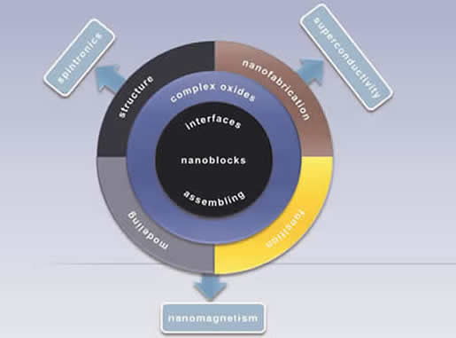

nanoSELECT
Advanced materials and NANOtechnologies for innovative electrical, ELECTronic and magnetoelectronic devices
nanoSELECT
ICMAB-CSIC, Bellaterra, Barcelona
The Network of Excellence (NOE) NANOSELECT is a natural continuation of the corresponding Consolider Project (Advanced materials and NANOtechnologies for innovative electrical, ELECTronic and magnetoelectronic devices) which was focused in Functional Oxiede Materials. The project, as it’s clearly indicated by the corresponding indicators, was extremely successful: one of the achievements was to settle a powerful ensemble of Scientific Platforms, at the same time that it contributed to reach an extensive and efficient collaborative network among Research Groups with complementary profiles in related fields, around Functional Oxides, and so a strong synergy was generated. The present proposed action has as its main objective to profit of the previous effort investing now in keeping in place a set of networking activities while at the same time we further promote the international identification of NANOSELECT as a reference, a distinction which became a hallmark of the project. The new NOE proposal has established novel and attractive scientific objectives in domains having a large societal and economic impact: energy, electronics and nanomedicine. The scientific objectives are linked to the following topics: 1/ Energy: Superconducting materials for power applications; Oxides for photovoltaic generation; 2/ Oxide electronics: Towards energy efficient spintronic devices; Integration of functional oxides on Silicon; Plasmonics in hybrid ferroic systems; 3/ Nanomedicine: Oxide nanoparticles for therapy and diagnosis; Oxide nanoparticles anchored in biocompatible scaffolds for tissue regeneration.
The Project is divided into 5 working groups where complementary profile of the research groups (RG) is evidenced: 1/ Nanofabrication: self-organization, nanotemplates and lithography, 2/ Smart production of nanostructured materials and nanocomposites with new functionalities, 3/ Advanced analysis of materials and nanostructures, 4/ Theory, modeling and simulation of materials and nanostructures, 5/ New electrical, electronic and magnetoelectronic devices and systems. This internal structure enables to create synergy among the RG with a common scientific-technological objective: understand and model, control and exploit the interfaces between dissimilar materials in order to generate new functionalities or modify radically the existing ones.
The experience of the groups is both wide and demonstrable and they have recognized international prestige and their intense participation in the Framework Programme of the European Union is a clear sign of the profound commitment to promote scientific excellence and in Europe.
Clean, sustainable, safe and reliable energy for the 21st century

WG1: NANOFABRICATION: SELF-ORGANIZATION, NANOTEMPLATES AND LITHOGRAPHY
WG3: ADVANCED ANALYSIS OF MATERIALS AND NANOSTRUCTURES
WG4: THEORY, MODELING AND SIMULATION OF MATERIALS AND NANOSTRUCTURES
WG5: NEW DEVICES AND ELECTRIC, ELECTRONIC AND MAGNETOELECTRONIC SYSTEMS

E-mail: msalas@icmab.es